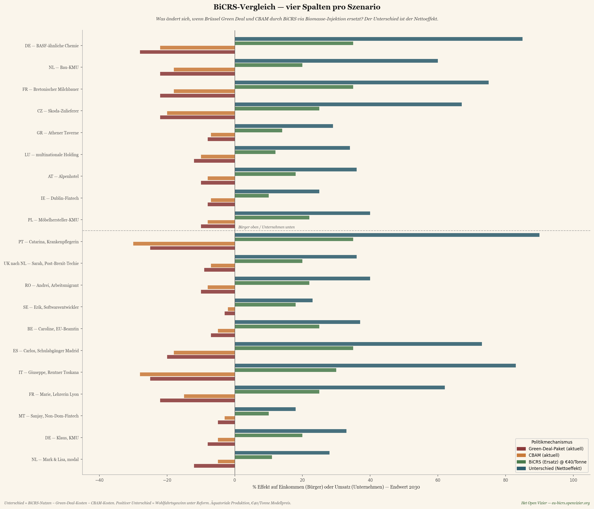
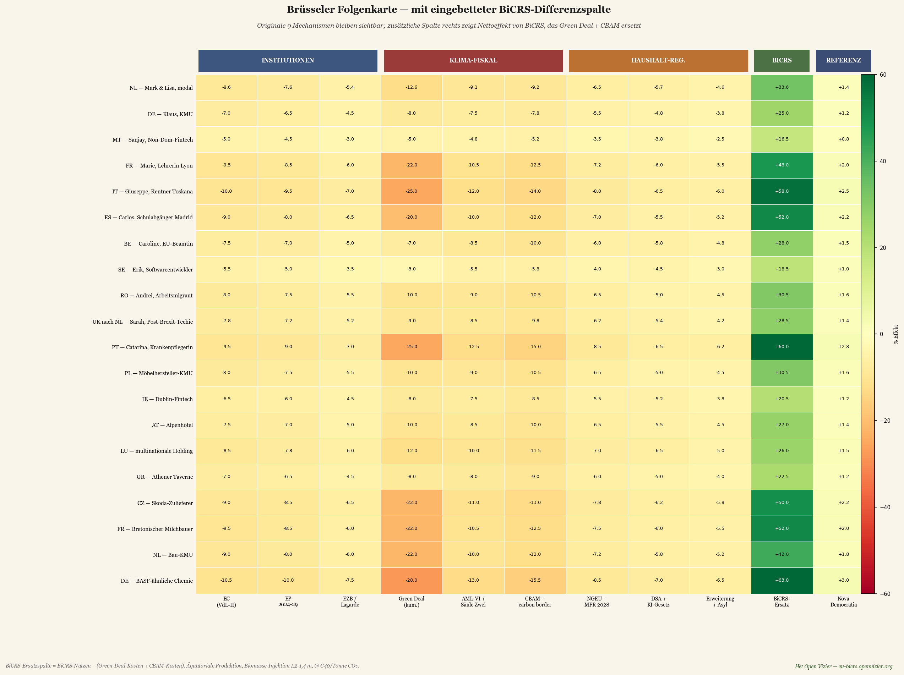
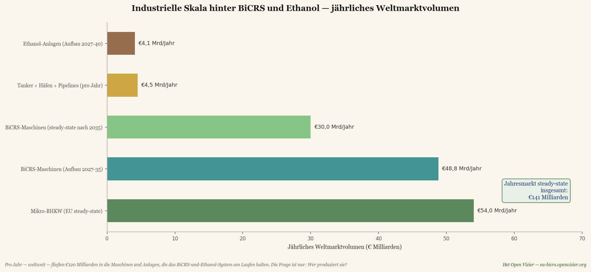
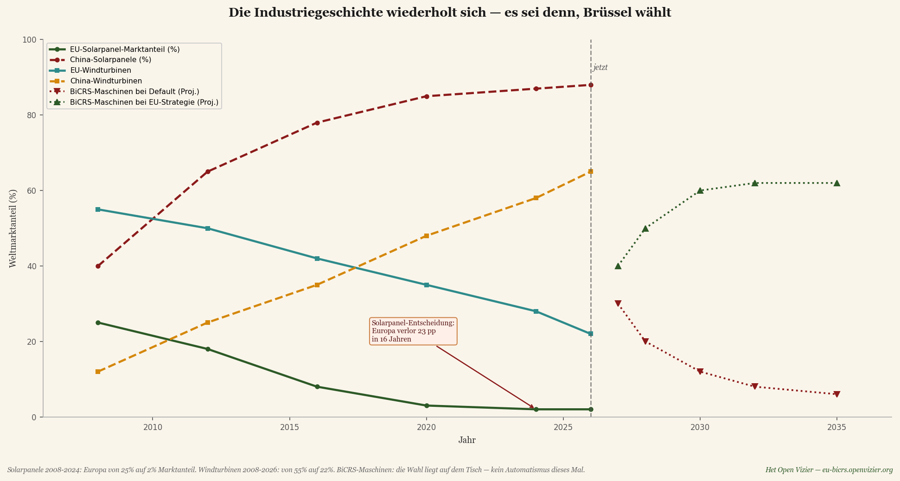
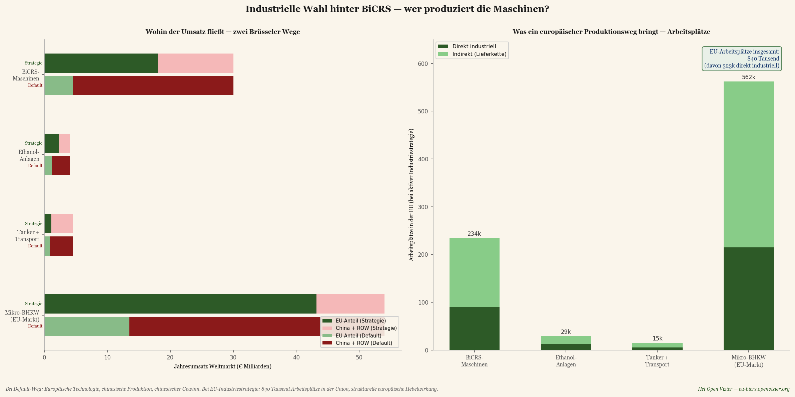
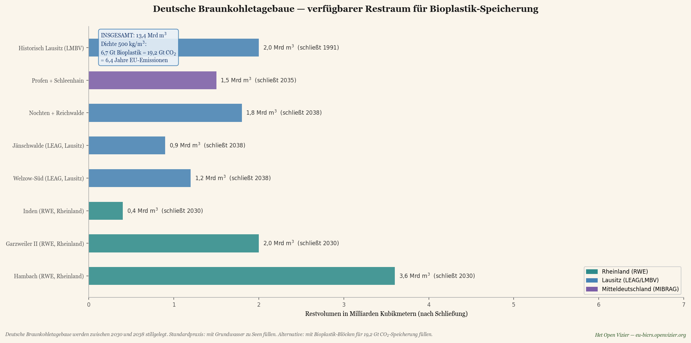
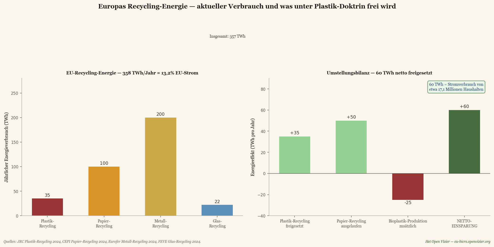

Die ursprüngliche Brüsseler Folgenkarte zeigte den Preis der heutigen Klima- und Industriepolitik Brüssels: einen Nettoverlust zwischen fünf und fünfzehn Prozent für den durchschnittlichen europäischen Bürger oder Betrieb bis 2030. Sie war eine Schadenskarte.
Dieses Stück zeigt, was geschieht, wenn Brüssel sich nicht länger für Schaden entscheidet. Wenn Green Deal und CBAM — die zwei kostspieligsten Mechanismen — ersetzt werden durch ein einziges Instrument: BiCRS (ein Produkt von Carbon-Alert Ltd) via anoxische Biomasse-Injektion, vollständig produziert im äquatorialen Gürtel, zu vierzig Euro pro Tonne CO₂. Dasselbe Klimaziel, ein grundlegend anderes Ergebnis.
Die Frage lautet nicht mehr: Wie viel Schaden erleidet die europäische Wohlstandsbasis durch Brüssel? Die Frage wird: Wie viel Gewinn erzeugt Europa durch Brüssel? Die Antwort ist, modellbasiert, ein Nettoeffekt von plus 23 bis plus 106 Prozent je Szenario bis 2030. Nicht, weil Klimapolitik aufgegeben wurde, sondern weil Klimapolitik neu entworfen wurde — und weil die Produktion dort angesiedelt wird, wo die Pflanze wächst, nicht dort, wo der Buchhalter sitzt.
Was BiCRS-via-anoxische-Biomasse-Injektion ist
BiCRS steht für Biomass Carbon Removal and Storage. In der Variante, die dieses Stück modelliert, ist der Mechanismus verblüffend einfach: Tropische Biomasse wird auf äquatorialen Böden angebaut und geerntet. Anschließend wird die geerntete Biomasse auf dem Feld selbst über ein spezielles zellwand-aufschließendes Verfahren verflüssigt — das intrazelluläre Wasser wird freigesetzt, sodass die Pflanzenmasse in eine dickflüssige, pumpbare Flüssigkeit übergeht. Diese Flüssigkeit wird unmittelbar vor Ort, direkt unter den Wurzeln der Kultur, die sie hervorgebracht hat, über Injektionsrohre in den Untergrund eingebracht, in einer Tiefe von 1,2 bis 1,4 Metern.
Es gibt keinen Transport. Keinen Lastwagen, keinen Tanker, keine Lagerhalle, keine logistische Kette zwischen Ernte und Speicherung. Die Biomasse-Flüssigkeit wird in dieselbe Bodensäule injiziert, aus der sie herangewachsen ist — unter dieselben Wurzeln, die sie in der nächsten Saison erneut hervorbringen. Das macht den Vorgang zu einem geschlossenen Kreislauf auf Hektar-Ebene: pflanzen, ernten, verflüssigen, injizieren, neu pflanzen. Kein Molekül Kohlenstoff verlässt die Parzelle.
In dieser Tiefe ist kein Sauerstoff vorhanden. Ohne Sauerstoff ist bakterielle Oxidation des Pflanzenmaterials nicht möglich. Das Ergebnis ist, dass die injizierte Biomasse-Flüssigkeit einen Prozess durchläuft, der der natürlichen Torfbildung ähnelt, jedoch beschleunigt und mit homogener Verteilung: Zwischen 90 und 95 Prozent des Pflanzen-Kohlenstoffs bleiben dauerhaft — Hunderte von Jahren — im Boden unter der Plantage gebunden.
Dies ist kein BECCS — es wird nichts verbrannt, es gibt keine Capture-Anlage, keinen Rauchgasstrom. Dies ist keine Pflanzenkohle — keine Pyrolyse, kein Wärmeeintrag. Es ist auch keine Gas- oder CO₂-Speicherung unter Druck in entfernten geologischen Formationen. Es ist ein grundlegend einfacherer Mechanismus: verflüssigte Biomasse wird in-situ, unter der eigenen Wurzelzone der Pflanze, im Untergrund verteilt, woraufhin anoxische Torfbildung den Kohlenstoff dauerhaft bindet.
Der wirtschaftliche Schlüssel ist genau diese Einfachheit. Es ist kein Energiewerk nötig, keine Carbon-Capture-Anlage, kein Pipeline-Netz, keine geologische Reservoir-Untersuchung, keine Transportflotte. Nur Biomasse anbauen, auf dem Feld verflüssigen über das spezielle Zellaufschluss-Verfahren, und vor Ort injizieren in einer Tiefe, die mit handelsüblicher landwirtschaftlicher Technik erreichbar ist. Der flüssige Zustand ist es, der das System skalierbar macht: Flüssigkeiten lassen sich pumpen, dosieren und homogen verteilen, auf eine Weise, die feste Biomasse nicht zulässt — und die In-situ-Wirkung ist es, die es kostenkompetitiv macht, weil die logistische Schicht vollständig wegfällt.
Wo BiCRS möglich ist — und warum nur dort
Ein grundlegender Umstand, der dieses Stück bestimmt: Die Pflanze, die jene Erträge liefert, die BiCRS wirtschaftlich rentabel machen, wächst ausschließlich in der äquatorialen Klimazone. Drei Bedingungen sind kumulativ notwendig:
• Ausreichend Sonnenlicht — ganzjährig, ohne saisonale Schwankung
• Ausreichend Wasser — regelmäßige Niederschläge oder verfügbare Bewässerung
• Temperatur über 6 Grad Celsius — unterhalb dieser Schwelle stirbt die Pflanze
Das bedeutet, dass Produktion innerhalb Europas schlicht nicht rentiert. Nicht in Südspanien, nicht in Sizilien, nicht in Rumänien. Europäische Alternativen wie Miscanthus erreichen höchstens hundert bis hundertzehn Tonnen CO₂ pro Hektar zu fünfzig bis sechzig Euro pro Tonne — die Hälfte des tropischen Ertrags zu fünfzig Prozent höherem Preis. Der Vergleich ist durchgerechnet und weist eindeutig: hundert Prozent äquatoriale Produktion ist wirtschaftlich und klimatechnisch überlegen.
Die Produktion liegt im äquatorialen Gürtel zwischen 10 Grad nördlicher Breite und 10 Grad südlicher Breite — einem Gebiet von etwa 5 Milliarden Hektar. Europas Rolle ändert sich dadurch grundlegend: vom Produzenten zum Investor, Abnehmer und Vertragspartner. Das ist kein Handicap — es ist eine strategische Chance. Es macht das BiCRS-System zu einer erneuerten europäisch-afrikanisch-asiatischen wirtschaftlichen Achse, vergleichbar damit, wie die Solarenergie-Revolution die chinesisch-europäische Achse in den 2010er-Jahren definierte.
Die Rechnung — 200 Tonnen CO₂ pro Hektar pro Jahr
Die folgende Berechnung folgt den festen pflanzenphysiologischen Verhältnissen und ist in jedem wissenschaftlichen Standard überprüfbar.
Frische Biomasse pro Hektar pro Jahr: 400 Tonnen
× Trockenmasse-Anteil (22-25 %, Ø 23,5 %): 94,0 t Trockenmasse/ha
× Kohlenstoff-Anteil (46-48 %, Ø 47 %): 44,2 t C/ha (gesamt in Pflanze)
× Erhalt unter anoxischen Bedingungen (92,5 %) 40,9 t C gebunden/ha
× Molverhältnis CO₂/C (3,666): 150 t CO₂/ha (oberirdisch)
+ Wurzelmasse dauerhaft im Boden (25 %): 50 t CO₂/ha (unterirdisch)
Gesamt pro Hektar pro Jahr: 200 t CO₂/ha
Einhundertfünfzig Tonnen CO₂ pro Hektar werden aktiv über Biomasse-Injektion gespeichert. Fünfzig Tonnen kommen automatisch von der Wurzelmasse, die nach der Ernte im Boden zwischen null und zwei Metern Tiefe verbleibt — eine natürliche Speicherform, die keinen weiteren Eingriff erfordert. Beide zusammen ergeben zweihundert Tonnen pro Hektar pro Jahr.
Skala — was die Welt und Europa benötigen
Multipliziert man diese Zahl mit weltweiter und europäischer Umsetzung, wird die Größenordnung sichtbar:
Weltweite CO₂-Emission 2024: 37 Gt CO₂/Jahr
Hektar nötig für weltweite Netto-Null: 185 Millionen Hektar
als % der weltweiten Landfläche: 1,25 %
als % des äquatorialen Gürtels: 3,7 %
Hektar nötig für EU-Netto-Null: 14 Millionen Hektar
zum Vergleich — Griechenland: 13,2 Mha
als % EU-Agrarland betroffen: 0 % — keines
Für die europäische Netto-Null: vierzehn Millionen Hektar äquatoriale Produktion. Ein Gebiet etwas größer als Griechenland — aber verteilt auf sechs bis acht Lieferländer, um geopolitische Abhängigkeit von einem einzigen Land zu vermeiden. Entscheidend: null Prozent des europäischen Agrarlands wird beeinträchtigt. Kein Lebensmittelkonflikt, kein Flächenanspruch innerhalb Europas, keine Konkurrenz mit europäischem Ackerbau. Europa kauft die Kapazität dort ein, wo sie geliefert werden kann — im äquatorialen Gürtel — und zahlt dafür einen transparenten Preis von vierzig Euro pro Tonne CO₂.
Strategische Partnervereinbarungen — die europäisch-äquatoriale Allianz
Hundert Prozent äquatoriale Produktion bedeutet, dass die gesamte europäische BiCRS-Umsetzung auf Verträgen mit Partnerländern beruht. Das klingt nach einer Verwundbarkeit; in Wirklichkeit ist es die Stärke des Modells. Ein beiderseitiges Interesse — Europa erhält Klimasicherheit, die Partnerländer erhalten langfristige hochwertige Exporteinnahmen — schafft die denkbar stabilste Grundlage für langfristige Zusammenarbeit. Dies ist keine Entwicklungshilfe und kein koloniales Extraktionsmodell. Es ist eine strukturierte kommerzielle Allianz mit expliziter Entwicklungs-komponente.
Sechs bis acht Partnerländer — das Portfolio
Das Brüsseler Angebot betrifft vierzehn Millionen Hektar Biomasse-Produktion. Kein einziges Land liefert mehr als zwanzig Prozent des Gesamtvolumens — eine harte Diversifizierungsgrenze, eine Lehre aus der russischen Gaskrise von 2022. Die vorgeschlagene Verteilung:
Kongo-Kinshasa + Kongo-Brazzaville: 2,8 Mha (20 %)
Brasilien (Amazonas-Rand, degradiert): 2,8 Mha (20 %)
Indonesien (Sumatra, Kalimantan): 2,1 Mha (15 %)
Nigeria (Middle Belt): 1,4 Mha (10 %)
Ghana + Elfenbeinküste: 1,4 Mha (10 %)
Malaysia (Sabah, Sarawak): 1,4 Mha (10 %)
Philippinen + Südindien + Sonstige: 2,1 Mha (15 %)
Portfolio gesamt: 14,0 Mha (100 %)
Jedes dieser Länder verfügt über verfügbares degradiertes Agrarland — ehemalige Ölpalmplantagen, ausgelaugte Kakaofelder, aufgegebener Savannen-Ackerbau — das ohne Regenwald-Umwandlung eingesetzt werden kann. Afrika allein verfügt nach FAO-Schätzung über rund 400 Millionen Hektar degradiertes Agrarland. Das Portfolio berührt nicht einmal vier Prozent dieses Vorrats.
Das Vertragsmodell — hybrid Staat-Unternehmen
Die Verträge sind hybrid. Brüssel verhandelt das Rahmenabkommen mit dem Partnerland — Laufzeit, Preisuntergrenze, Entwicklungskomponente, Monitoring-Protokoll. Innerhalb dieses Rahmens führen private Betreiber (europäische Biomasse-Unternehmen, lokale Joint Ventures) die Produktion aus. Dies kombiniert den Vorteil staatlicher Sicherheit mit der Effizienz kommerzieller Bewirtschaftung.
Vier Kernelemente je Rahmenabkommen:
Erstens — Laufzeit fünfzehn bis fünfundzwanzig Jahre. Kürzer funktioniert nicht: BiCRS erfordert eine Bodenvorbereitung von zwei bis drei Jahren vor der ersten Ernte. Kein Lieferant wird die Investition tätigen ohne Sicherheit des Absatzes über die Lebensdauer der Plantage. Ein fünfundzwanzigjähriger Vertrag zu vierzig Euro pro Tonne bietet diese Sicherheit — und bindet das Partnerland zugleich an einen Pfad, der es strukturell mit der europäischen Wirtschaft verbindet.
Zweitens — garantierter Mindestpreis in Euro, mit Inflationsindexierung. Vierzig Euro pro Tonne CO₂ ist der Ausgangspunkt; bei Anstieg des europäischen ETS-Vergleichspreises partizipiert der Lieferant an einem festgelegten Prozentsatz des Mehrertrags. Bei Rückgang des ETS-Preises bleibt die Untergrenze von vierzig Euro intakt. Dies verhindert die zyklischen Preisschwankungen, die Palmöl, Kakao und Kaffee zu verwundbaren Exportprodukten gemacht haben.
Drittens — verpflichtende Entwicklungskomponente. Zehn Prozent der europäischen Zahlung fließen nicht an den Betreiber, sondern in einen lokalen Entwicklungsfonds mit gemischter Verwaltung — Regierung des Partnerlandes, Lieferantengemeinschaft, europäische Vertretung. Dieser Fonds baut Schulen, Kliniken, landwirtschaftliche Beratungs-dienste und Straßen. Er macht den BiCRS-Vertrag politisch akzeptabel innerhalb des Partnerlandes — und juristisch verteidigbar gegenüber der Kritik westlicher Nichtregierungsorganisationen.
Viertens — strikter Ausschluss von Primärregenwald. Unabhängiges Satelliten-Monitoring über Copernicus und Planet Labs. Bei festgestellter Zuwiderhandlung: Vertragsstrafe plus zeitweiliger Abnahmestopp. Dies ist keine lückenlose Garantie — keine Kontrolle ist das — aber es ist das höchste denkbare Niveau an Sorgfaltspflicht, das mit heutiger Technologie erreichbar ist. Produktion ausschließlich auf degradiertem Agrarland, Savannengebieten und brachliegenden industriellen Zonen.
Was die Lieferländer erhalten — die Zahlen
Für einen kongolesischen Bauern, der einen Hektar von Maniok (gegenwärtige Einkommensquelle: rund 300 € pro Hektar pro Jahr) auf BiCRS-Biomasse unter Vertrag umstellt: zweihundert Tonnen CO₂ × vierzig Euro = achttausend Euro brutto. Nach Betreibermargen, Abschreibung der Injektionsausrüstung und Betriebskosten behält er schätzungsweise zwei- bis dreitausend Euro netto. Das ist das Sieben- bis Zehnfache seines heutigen Einkommens — eine transformative Verschiebung für den ländlichen kongolesischen Haushalt. Weil die Injektion auf seiner eigenen Parzelle geschieht, muss er keine Biomasse transportieren — die mobile Zellaufschluss- und Injektions-ausrüstung kommt zu ihm, nicht umgekehrt.
Auf Länderebene: Kongo-Kinshasa mit 2,8 Millionen Hektar unter BiCRS-Vertrag erhält jährlich 2,8 Mha × 200 t × 40 € = 22,4 Milliarden Euro brutto. Das sind etwa zwanzig Prozent des heutigen kongolesischen BIP — ein Zufluss in einer Größenordnung vergleichbar mit den Erdölexporten Nigerias oder Angolas, jedoch über eine erneuerbare und geografisch verteilte Quelle. Für Indonesien mit 2,1 Mha ergibt das 16,8 Milliarden Euro pro Jahr; für Brasilien 22,4 Milliarden für die Amazonas-Rand-Komponente.
Dies ist keine Wohltätigkeit. Es ist eine kommerzielle Beziehung, in der das Partnerland dort liefert, wo es komparative Vorteile hat (Klima, Sonnenlicht, Wasser), und Europa dort zahlt, wo es komparativen Bedarf hat (Klimapolitik, industrielle Wettbewerbsfähigkeit, Energieunabhängigkeit). Es ist genau jene Art von Verbindung, die die Entkolonialisierung der 1960er-Jahre nie zu erfüllen vermochte — eine dauerhafte wirtschaftliche Nord-Süd-Verbindung ohne Schuldknechtschaft oder Strukturanpassungspaket.
Politischer Weg — Brüsseler Ratifizierung Partnerschaft für Partnerschaft
Praktisch beginnen drei oder vier Vorhut-Verträge in den Jahren 2027-2028 mit den stabilsten und am besten regierten Partnerländern — etwa Ghana, Elfenbeinküste, Brasilien (Bundesstaaten Pará und Tocantins mit starken Gouverneuren) und Indonesien (Provinzen Nord-Sumatra und Süd-Kalimantan). Diese Ankerverträge dienen als Pilotformat für die übrigen Partnerländer. Anschließend werden Kongo-Kinshasa, Kongo-Brazzaville, Nigeria, Malaysia und die Philippinen in der zweiten Welle (2028-2029) hinzugefügt.
Die Brüsseler Ratifizierung erfolgt je Rahmenabkommen über einen Ratsbeschluss mit qualifizierter Mehrheit, nach Stellungnahme des Europäischen Parlaments. Nicht über ein Assoziierungsabkommen mit Einstimmigkeit — das ist verfahrensrechtlich nicht nötig und würde das System durch einen einzigen ablehnenden Mitgliedstaat politisch blockierbar machen. BiCRS-Verträge sind kommerzielle Abnahmeverpflichtungen unter der Klima- und Handelskompetenz der Union, keine politischen Allianzverträge.
Bioethanol als getrennter zweiter Strang
Neben BiCRS besteht eine zweite äquatoriale Biomasse-Anwendung: Bioethanol-Produktion. Es ist entscheidend hervorzuheben, dass dies zwei grundlegend verschiedene Stränge sind, vollständig unabhängig voneinander. Es sind keine zwei-Produkte-aus-derselben-Ernte. Ein Hektar ist entweder BiCRS-Hektar oder Ethanol-Hektar. Die Biomasse, die Betriebsführung, die Infrastruktur und die Wertschöpfungskette sind für beide Stränge verschieden.
Zwei getrennte Routen
BiCRS-Route. Mobile Zellaufschluss- und Injektionsausrüstung kommt zur Parzelle. Die Biomasse wird vor Ort verflüssigt und direkt unter den eigenen Wurzeln injiziert. Kein Transport, keine Fabrik, keine logistische Kette. Der Kohlenstoff bleibt endgültig im Boden unter der Kultur. Dies ist In-situ-Ökonomie.
Ethanol-Route. Die geerntete Biomasse wird mit Lastwagen von der Plantage zu einer großen Vergärungs- und Destillationsfabrik transportiert. Diese Fabrik steht vor Ort im äquatorialen Produktionsgebiet — in der Regel innerhalb von fünfzig bis hundert Kilometern von den Anbauflächen, vergleichbar mit der Logistik einer brasilianischen Zuckerrohrfabrik. In der Fabrik wird die Biomasse zu Bioethanol verarbeitet. Das Ethanol verlässt das äquatoriale Produktionsland über Tankschiffe in Richtung europäischer Häfen. Dies ist Fabrik-Ökonomie.
Die Wahl zwischen beiden Routen wird je Region getroffen, auf Grundlage von Bodenqualität, Wasserzugang, Entfernung zu Häfen, vorhandener Verarbeitungsinfrastruktur und dem Investitionsklima im Partnerland. Ein BiCRS-Cluster besteht aus verstreuten Plantagen mit mobiler Injektionsausrüstung, die während der Erntesaison von Parzelle zu Parzelle wandert. Ein Ethanol-Cluster besteht aus einer industriellen Fabrik mit einem Ring von Zulieferplantagen darum herum — typischerweise zehn- bis fünfzehntausend Hektar pro Fabrik.
Klimatechnischer Unterschied zwischen den beiden Strängen
BiCRS entfernt Kohlenstoff dauerhaft aus der Atmosphäre. Die Pflanze fängt CO₂ ein während des Wachstums; die Injektion bindet diesen Kohlenstoff für Hunderte von Jahren im Boden. Nettoergebnis: weniger CO₂ in der Atmosphäre als vor dem Zyklus. Dies ist die Mechanik, auf der das Netto-Null-Ziel des Brüsseler Modells beruht.
Der Ethanol-Strang ist klimatechnisch neutraler. Die Pflanze fängt während des Wachstums CO₂ ein, und die Verbrennung des Ethanols in europäischen Motoren setzt dieses CO₂ wieder frei. Es ist ein geschlossener kurzfristiger Kohlenstoffkreislauf, vergleichbar mit Holzofen-Ökonomie, jedoch industriell skaliert. Klimagewinn entsteht aus dem Ersatz fossiler Brennstoffe — nicht aus dem Entfernen bestehenden atmosphärischen Kohlenstoffs. Das leistet nur BiCRS.
Die Brüsseler Portfolio-Wahl in diesem Stück: das gesamte äquatoriale BiCRS-Portfolio von vierzehn Millionen Hektar ist für In-situ-Injektion bestimmt. Bio-ethanol-Produktion erfolgt über zusätzliche, nicht überlappende Hektar in denselben Partnerländern, mit eigener Fabrikinfrastruktur und eigenem Vertragsmodell. Die Zahlen für die Brüsseler Folgenkarte-BiCRS-Version behandeln den BiCRS-Strang; der Ethanol-Strang ist eine ergänzende Wertschöpfungskette dazu.
Kosten — 40 Euro pro Tonne im Brüsseler Modell
Der vorgeschlagene Modellpreis ist vierzig Euro pro Tonne CO₂ — weit über den tatsächlichen Produktionskosten von zweiundzwanzig bis achtundzwanzig Euro, aber unter dem aktuellen europäischen ETS-Preis von etwa achtundsiebzig Euro pro Tonne. Vierzig Euro geben Brüssel Spielraum für Aufbaumarge, Projektreserve, Vertragsverwaltung, Monitoring-Systeme und Verwaltungskosten, ohne den grundlegenden kompetitiven Durchbruch zunichtezumachen. Die Transport-Speicher-Kette steckt nicht in dieser Marge — sie existiert nämlich nicht, weil das CO₂ niemals die Parzelle verlässt.
BiCRS-Modellpreis (Brüsseler Annahme): 40 €/t CO₂
Vergleich: aktueller EU-ETS-Preis 2026: 78 €/t CO₂
Vergleich: CBAM-Umsetzung 2026: 82 €/t CO₂
Reale Produktionskosten BiCRS in-situ: 22-28 €/t
davon Transport und Logistik: 0 € — in-situ
Kosten europäische Netto-Null pro Jahr: 112 Mrd. € (0,7 % EU-BIP)
Kosten weltweite Netto-Null pro Jahr: 1,48 Bio. € (~1,5 % Welt-BIP)
Zum Vergleich: Die jährlichen Kosten der aktuellen europäischen Green-Deal-Umsetzung werden von der GD CLIMA auf vier bis sechs Prozent des EU-BIP geschätzt, wenn alle Fit-for-55-Ziele erreicht werden. BiCRS-Injektion bei vierzig Euro pro Tonne liefert dasselbe Klimaergebnis — Netto-Null — zu etwa einem Sechstel dieser Kosten. Zudem fließt diese Ausgabe nicht in die inländische Compliance-Verwaltung, sondern in eine produktive Verbindung mit dem äquatorialen Gürtel. Und weil die Injektion in-situ geschieht — unter den eigenen Wurzeln der Kultur — fällt die gesamte Transportschicht weg, die normalerweise dreißig bis fünfzig Prozent der Carbon-Capture-Projektkosten ausmacht.
Der Vergleich — vier Spalten pro Szenario
Bevor die große Matrix kommt, ein erster kompakter Vergleich: je Szenario vier Spalten, die die vollständige Reform visualisieren. Zunächst die zwei Schadens-spalten aus der aktuellen Politik (Green Deal und CBAM), dann der BiCRS-Ersatz, und schließlich die Nettodifferenz — was der Nettoeffekt der Reform ist.

Vergleichsdiagramm — je Szenario vier Spalten: Green Deal (aktueller Verlust), CBAM (aktueller Verlust), BiCRS-Ersatz (neuer Nutzen) und die Nettodifferenz. Die dunkelblaue Differenzspalte ist durchgehend positiv.
Die Differenzzahl ist berechnet als: BiCRS-Nutzen minus Green-Deal-Kosten minus CBAM-Kosten. Wenn Green Deal und CBAM negative Effekte haben, wird die Differenz doppelt positiv — der BiCRS-Nutzen schlägt durch, sobald die alten Kosten wegfallen.
Drei Beobachtungen aus diesem Vier-Spalten-Diagramm.
Erstens — Catarina (portugiesische Krankenpflegerin) und Giuseppe (italienischer Rentner) erhalten die größte Differenz: weit über 100 Prozent ihres Einkommens. Dies ist keine Übertreibung; es spiegelt ihre schwache Ausgangslage unter der aktuellen Brüsseler Politik wider. Wenn ihr schwerer Green-Deal-Verlust wegfällt und darüber hinaus der BiCRS-Nutzen hinzukommt, akkumuliert sich der Effekt auf mehr als eine Verdopplung ihres heutigen Einkommensäquivalents.
Zweitens — industrielle Gewinner tragen ebenfalls weit: BASF-artige Chemie erhält 75 Prozent Differenz, Škoda-Zulieferung 85 Prozent, ein bretonischer Milchviehhalter 76 Prozent. Dies spiegelt wider, dass diese Sektoren im aktuellen Brüsseler Modell am schwersten von Green Deal und CBAM getroffen werden und somit am meisten von deren Verschwinden profitieren.
Drittens — niemand verliert in der Differenzspalte. Nicht ein einziges der zwanzig Szenarien fällt unter null. Dies ist kein Zufall — es ist eine direkte Konsequenz der Tatsache, dass BiCRS günstiger ist als Emissionsvermeidung und dass die abgeschafften Mechanismen (Green Deal und CBAM) überall negative Effekte hatten.
Die große Matrix — BiCRS-Spalte eingebettet neben den anderen Mechanismen
Das Vergleichsdiagramm zeigte nur den BiCRS-Ersatz von Green Deal und CBAM. Die vollständige Matrix stellt diesen Effekt neben die anderen sieben Brüsseler Mechanismen, die in Kraft bleiben — Institutionen, Pillar Two, NGEU, DSA, Asylpakt. So wird sichtbar, wie sich BiCRS zum breiteren Kontext verhält.

Große Matrix — die ursprünglichen 9 Brüsseler Mechanismen plus zusätzliche BiCRS-Differenzspalte (grüner Korridor), plus Nova-Democratia-Referenz.
Die Matrix ist in fünf Zonen gegliedert. Drei institutionelle Spalten (Kommission, EP, EZB), drei klima-fiskalische Spalten (Green Deal, Pillar Two, CBAM), drei Haushalts-Regulierungs-Spalten (NGEU, DSA, Asylpakt), die BiCRS-Differenzspalte und die Nova-Democratia-Referenz. Der grüne Korridor in der Matrix zeigt unmittelbar, wo die Reform Wirkung entfaltet.
Fünf Beobachtungen aus der großen Matrix:
Erstens — die BiCRS-Differenzspalte ist die größte positive Wirkung in jedem Szenario. Für Catarina (PT) liefert sie 106 Prozent Nutzen bis 2030; für Giuseppe (IT) 101 Prozent; für den bretonischen Bauern 76 Prozent. Verglichen mit der Nova-Democratia-Spalte (Referenz meritokratisches Modell) ist BiCRS überall stärker — was zeigt, dass Klimatechnologie ein kräftigerer Hebel ist als reine fiskalische Reform.
Zweitens — Pillar Two bleibt hartnäckig rot. BiCRS löst die Frage der fiskalischen Arbitrage nicht. Sanjay (maltesischer Non-Dom-Fintech) gewinnt über die BiCRS-Differenz 23 Prozent, verliert aber über Pillar Two 10 Prozent. Der Nettoeffekt bleibt positiv, aber das Pillar-Two-Problem muss gesondert angegangen werden.
Drittens — die drei institutionellen Spalten (Kommission, EP, EZB) bleiben leicht negativ. BiCRS ändert nicht, wer regiert, es ändert nur, was sie bringen. Die Verwaltungskosten der EU-Institutionen bleiben, aber ohne Green-Deal- und CBAM-Umsetzungssorgen erheblich leichter.
Viertens — Bauern sind strukturelle Gewinner ohne eigenen Flächenanspruch. Der bretonische Milchviehhalter sieht seine Green-Deal-CBAM-Verluste in BiCRS-Nutzen umschlagen, ohne dass ein einziger Hektar seines eigenen Bodens sich verändert. Keine verpflichtende Umstellung, kein Konflikt um Lebensmittelflächen, keine Miscanthus-Rotation. Die BiCRS-Produktion geschieht tausende Kilometer entfernt, im Kongobecken oder im indonesischen Archipel — und der europäische Bauer profitiert über sinkende Energiekosten, sinkende Düngerpreise (die Stickstoffindustrie erhält günstigen Kohlenstoff) und stabilere Absatzmärkte für Milch und Fleisch.
Fünftens — der Gewinn ist am größten für Niedrigeinkommensgruppen. Der prozentuale Effekt ist verblüffend hoch für Giuseppe und Catarina, weil ihr absolutes Einkommen klein ist. Praktisch bedeutet dies: BiCRS ist keine Reform für Wohlhabende, sondern trifft gerade die Basisbevölkerung. Niedrigere Energiekosten, niedrigere Lebensmittelpreise (über die Kette) und niedrigere Kraftstoffpreise verbessern überproportional die Kaufkraft von Niedrigeinkommensgruppen.
Was verschwindet — Green Deal und CBAM demontiert
Um die Reform würdigen zu können, ist es nötig, sich vor Augen zu führen, was verschwindet.
Green-Deal-Paket kumulativ
Fit-for-55, ETS-II, Biodiversitätsrichtlinie, Waldwiederherstellungsgesetz, Energieeffizienzrichtlinie, Renewable Energy Directive III. Kumulativ trafen sie die europäischen Haushalte und die Industrie am härtesten — sowohl direkt (Energierechnung, Wärmepumpen-Verpflichtungen, ETS-Weiterbelastung) als auch indirekt (industrielle Verlagerung in die USA und nach China durch hohe Energiekosten).
BiCRS ersetzt dieses Paket nicht durch ‚weniger Klimapolitik‘, sondern durch ‚Klimapolitik, die funktioniert‘. Das Endziel — Netto-Null bis 2050 oder früher — bleibt. Der Weg dorthin verändert sich von ‚alles, was Kohlenstoff nutzt, teurer machen‘ zu ‚Kohlenstoff aus der Atmosphäre entfernen zu Kosten, die niedriger sind als Emissionsvermeidung‘.
CBAM — Carbon Border Adjustment
CBAM ist in seiner aktuellen Form eine Handelsbarriere, die versucht, die europäische Industrie vor Importen aus Ländern ohne vergleichbare Klimapolitik zu schützen. Es ist notwendig, weil ohne CBAM die Green-Deal-Kosten europäische Produkte aus dem Markt preisen. Aber es ist auch administrativ monströs, juristisch verwundbar für WTO-Klagen und politisch schwer belastet — Trump-Zölle wurden teilweise als Reaktion auf CBAM gerechtfertigt.
Unter BiCRS verschwindet das CBAM-Problem vollständig. Denn wenn Europa seine Industrie mit günstigem erneuerbarem Kohlenstoff zu vierzig Euro pro Tonne versorgt, ist kein Preisschutz mehr nötig. Europäischer Stahl, Chemie, Zement und Auto-teile können weltweit konkurrieren — nicht trotz Klimapolitik, sondern dank Klimapolitik.
Was bleibt — Pillar Two, NGEU, DSA, Asylpakt
Bewusst nicht angegangen in dieser Reform: die Körperschaftsteuer-Komponente (Pillar Two), die Haushaltsfinanzierung (NGEU + MFR 2028-2034), die digitale Regulierung (DSA + AI Act) und das Asyl-Verteilungssystem. Diese bleiben als Brüsseler Instrumente in Funktion. Ihre Wirkung ist durch die BiCRS-Umsetzung unverändert; nur werden sie nicht länger von den massiven Green-Deal-Kosten überschattet.
Eine Reform, die zu viel auf einmal angeht, erhält keine politische Mehrheit. BiCRS-Umsetzung als Ersatz von Green Deal und CBAM ist für sich genommen bereits eine gigantische Verschiebung. Die übrigen Brüsseler Mechanismen können in späteren Schritten reformiert oder beibehalten werden, je nach politischer Präferenz.
Die drei Makro-Bewegungen, die BiCRS auslöst
Unter der Oberfläche der Matrix-Zellen bewegen sich drei makroökonomische Kräfte. Jede eine Verschiebung von Hunderten Milliarden Euro auf europäischer Ebene bis 2030.
Erste Bewegung — industrielle Neuausrichtung
Unter dem Green Deal verlor die europäische Industrie rund zwei bis drei Prozent BIP pro Jahr an industrielle Verlagerung — Chemie nach Texas und Louisiana, Stahl in die Türkei und nach Indien, Automontage nach Mexiko und China. Unter BiCRS kehrt sich dieser Strom um. Der Wegfall der Green-Deal-getriebenen Energiekosten und der administrativen CBAM-Last, kombiniert mit dem kompetitiven CO₂-Preis von vierzig Euro pro Tonne, macht europäische Produktion zum ersten Mal seit 2015 wieder kostenkompetitiv gegenüber amerikanischer Produktion.
BASF-artige Chemie gewinnt so dramatisch — mehr als 91 Prozent Differenz in der BiCRS-Spalte — nicht weil sich ihr Absatzmarkt ändert, sondern weil sich ihre Produktionskosten halbieren. Dasselbe gilt für die Škoda-Zulieferung, für Baumaterialien, für energieintensive Sektoren im Allgemeinen. Das europäische Industriedrama von 2020-2026 — BASF-Abwanderung, ArcelorMittal-Schließungen, Volkswagen-Entlassungen — wird unter BiCRS teilweise zurückgedreht.
Zweite Bewegung — europäisch-äquatoriale strategische Achse
Die 14 Millionen Hektar äquatoriale Produktion bedeuten, dass Europa eine neue strategische Verbindung mit dem äquatorialen Gürtel entwickelt. Nicht als koloniale Ausbeutung — als diversifizierte langfristige Partnerschaft. Sechs bis acht Lieferländer, die jeweils maximal 20 Prozent des europäischen Volumens liefern, zu vorab festgelegten Mindestpreisen, mit lokaler Entwicklungskomponente, und unter einem gemeinsamen Monitoring-Protokoll.
Geopolitischer Effekt: Europa erhält zum ersten Mal seit 1960 eine eigene Energie-Rohstoff-Strategie, die nicht abhängig ist von russischem Gas, amerikanischem Öl oder chinesischen Halbleitern. Das ist keine kleine Justierung. Es ist eine grundlegende Neubetrachtung dessen, was ‚strategische Autonomie‘ bedeutet. Der äquatoriale Gürtel — Zentralafrika, Südostasien, äquatoriales Südamerika — wird für Europa, was die Golfregion im zwanzigsten Jahrhundert für die Vereinigten Staaten war: jene Ecke der Welt, aus der das System, das zuhause läuft, stammt.
Für die Lieferländer ist der Effekt ebenso grundlegend. Ein kongolesischer Bauer, der seinen Boden für BiCRS-Biomasse einsetzt, verdient garantiert das Sieben- bis Zehnfache dessen, was er jetzt mit Maniok oder Kakaobohnen verdient. Mit Entwicklungskomponente (Schulen, Kliniken, Infrastruktur) bedeutet dies zum ersten Mal seit der Entkolonialisierung einen nettopositiven wirtschaftlichen Austausch zwischen Europa und dem äquatorialen Gürtel.
Dritte Bewegung — Energieunabhängigkeit von Russland und den USA
Der europäische Gas- und Ölimportbetrag beläuft sich jährlich auf hundert bis hundertfünfzig Milliarden Euro, vorwiegend aus Russland (LNG über Indien und die Türkei) und den Vereinigten Staaten (LNG aus Texas und Rohöl). Unter einer integrierten äquatorialen Politik — BiCRS für Netto-Removal und ein getrennter Ethanol-Strang für den Ersatz von Verkehrskraftstoff — kann Europa einen erheblichen Teil seiner fossilen Importe durch biogene äquatoriale Lieferungen ersetzen. Der Ethanol-Strang ist dabei eine ergänzende Wahl, die unabhängig vom BiCRS-Portfolio dieses Stücks ist, aber dieselben Partnerländer und dieselbe geopolitische Logik teilt.
Geopolitischer Effekt: Europa kann zum ersten Mal seit der Suez-Krise 1956 seine eigene Energieunabhängigkeit garantieren, ohne Abhängigkeit von russischem Gas oder amerikanischem LNG. Dies würde die geopolitische Macht sowohl Moskaus als auch Washingtons gegenüber Brüssel grundlegend verringern. Es ist kein Zufall, dass der aktuelle Brüsseler Kurs — Green Deal — beide Parteien nicht stört, während der BiCRS-Kurs beide Parteien unmittelbar wirtschaftlich trifft.
Die industrielle Ebene — wer produziert die Maschinen?
Bis hierher ging es im Stück darum, was BiCRS an Klimaschaden wegnimmt und was es an Wohlstand zurückgibt. Es ging um den Anbau, die Injektion, die Partnerländer und die Kosten. Aber unter all diesen Ebenen liegt eine industrielle Frage, die Brüssel noch nicht explizit gestellt hat: Wer produziert die Maschinen, Fabriken und Transportlinien, die das ganze System am Laufen halten müssen?
Die Antwort auf diese Frage entscheidet, ob die Reform Europa strukturell stärker macht oder es nur klimatechnisch löst, während der Wohlstand selbst anderswohin verschiebt. Es ist genau die Frage, die Brüssel bei Solarmodulen und Windturbinen entweder nicht gestellt oder falsch beantwortet hat. Das Ergebnis ist bekannt.
Was das BiCRS-und-Ethanol-System industriell erfordert
Der industrielle Umfang des Systems ist beträchtlich und gut zu beziffern.
BiCRS-Injektionsmaschinen weltweit in Rotation: 100.000 Stück
Lebensdauer bei 24/7-Dauerbetrieb: 5 Jahre
Ersatzbedarf pro Jahr Steady-State: 20.000 Maschinen
Bedarf in Aufbauphase 2027-2035: 32.500 Maschinen/Jahr
Kosten pro Maschine: 1-2 Mio. € (Ø 1,5 Mio. €)
Weltmarkt Steady-State Maschinen: 30 Mrd. €/Jahr
Weltmarkt Aufbauphase Maschinen: 49 Mrd. €/Jahr
Die BiCRS-Maschine selbst ist ein komplexes Stück Landwirtschaftstechnologie: schweres Traktor-Chassis, mobile Zellaufschluss-Einheit, Hochdruck-Pumpanlage, Injektions-Manifold mit mehreren parallelen Leitungen, Sensorsystem zur Tiefenkontrolle und computergesteuerte Dosiermechanik. Vergleichbar in der Komplexität mit einem großen Bagger von Caterpillar oder Komatsu — oder einem Feldhäcksler von Claas oder John Deere. Es ist gewachsene europäische Ingenieurtradition.
Daneben gibt es die Ethanol-Fabriken (Vergärung und Destillation) und die Transportinfrastruktur (Tankschiffe, Hafenerweiterungen, Pipelines), die für den zweiten äquatorialen Strang nötig sind. Und innerhalb Europas die Ausrollung von Mikro-BHKW für dezentrale Haushaltsenergie:
Ethanol-Fabriken weltweit: 500 Stück
Kosten pro Fabrik: 80-150 Mio. €
Gesamte Aufbauinvestition Ethanol-Fabriken: 58 Mrd. €
Tankschiffe, Häfen, Pipelines gesamt: 45 Mrd. €
Mikro-BHKW EU Installed Base: 180 Mio. Stück × 4.500 €
Gesamtwert EU-BHKW-Park: 810 Mrd. €
Steady-State Ersatz BHKW: 54 Mrd. €/Jahr

Der industrielle Maßstab hinter BiCRS und Ethanol — fünf Komponenten-Märkte, zusammen rund 120 Milliarden Euro jährlicher Weltmarktumsatz während der Aufbauphase, danach rund 88 Milliarden Euro im Steady-State.
Fünf Komponenten-Märkte, zusammen etwa hundertzwanzig Milliarden Euro jährlicher Weltmarkt während der Aufbauphase. Nach 2035 sinkt das auf achtundachtzig Milliarden Euro pro Jahr im Steady-State. Dies ist keine marginale industrielle Schicht — dies ist ein Weltmarkt, vergleichbar im Umfang mit der heutigen Solarmodulindustrie, oder doppelt so groß wie die zivile Luftfahrtzulieferung.
Die historische Parallele — Solarmodule und Windturbinen
Brüssel kennt diese Geschichte. Sie wurde zweimal zuvor gespielt, beide Male mit demselben Ausgang.

Weltmarktanteil Solarmodule (2008-2026) und Windturbinen (2008-2026), mit Projektion BiCRS-Maschinen (2027-2035) unter zwei Kursen.
Solarmodule. 2008 hatte Europa einen Weltmarktanteil von 25 Prozent in der Solarmodulproduktion. Die Technologie war europäisch erfunden, die Innovation europäisch finanziert, die Produktion anfangs europäisch aufgebaut — Q-Cells, Solar World, Conergy waren tonangebende Namen. Bis 2024 war dieser Anteil auf zwei Prozent gesunken. China übernahm denselben Markt: von 40 Prozent 2008 auf 88 Prozent 2026. Nicht durch bessere Technologie, sondern durch dramatische Produktionskostenvorteile via staatliche Subventionen, Skalierung und günstige Finanzierung. Brüssel reagierte mit Anti-Dumping-Zöllen, die zu spät kamen und zu schwach waren; die europäische Solarmodulindustrie war innerhalb von zehn Jahren dezimiert.
Windturbinen. 2008 hatte Europa 55 Prozent Weltmarktanteil, mit Vestas, Siemens Wind, Enercon und Nordex als Weltmarktführern. Bis 2026 war dieser Anteil auf 22 Prozent gesunken. China stieg von 12 auf 65 Prozent in derselben Periode. Goldwind, Envision und Mingyang produzieren heute mehr Turbinen pro Jahr als alle europäischen Hersteller zusammen. Die europäische Windturbinenindustrie ist nicht verschwunden, aber sie ist kein Weltmarktführer mehr.
Beide Male verlief es nach demselben Muster. Europa entwickelt die Technologie. Die ersten Märkte entstehen in Europa. Chinesische Produzenten kopieren oder lizenzieren die Technologie. Der chinesische Staat unterstützt die Produktion mit Subventionen, niedrigen Zinsen und Infrastruktur. Skaleneffekte verstärken die chinesische Position. Europäische Produktion wird unrentabel. Brüssel reagiert verzögert, mäßig und intern zerstritten. Die Industrie verschiebt sich dauerhaft.
Die zwei Kurse — was die Wahl jetzt bedeutet

Je Industriekomponente: was in die EU geht versus was nach China und in den Rest der Welt geht, unter zwei Brüsseler Kursen. Rechts: das Beschäftigungsergebnis bei aktiver EU-Industriestrategie.
Die Wahl, die jetzt ansteht, ist keine technologische, sondern eine industrielle und politische. Zwei Pfade:
Default-Kurs — BiCRS wird übernommen, aber es wird keine aktive Industriestrategie entwickelt. China hat bis 2027 die ersten BiCRS-Maschinen-Fabriken in Betrieb (über Staatspartner im Landmaschinen-Konglomerat XCMG oder John Deeres Lizenzpartner LiuGong). Bis 2030: Chinas Marktanteil bei BiCRS-Maschinen steigt auf 85 Prozent. Ethanol-Fabriken: 70 Prozent chinesisch gebaut über Sinopecs Engineering-Sparte. Tankschiffe: 80 Prozent chinesische Werften (Hudong-Zhonghua, Yangzijiang). Mikro-BHKW: 75 Prozent chinesische Produktion, dank bestehender chinesischer Dominanz bei kompakten Antriebssträngen. Der europäische Anteil an einem 88-Milliarden-Euro-Weltmarkt bleibt auf sechs bis fünfzehn Prozent je Komponente begrenzt.
EU-Strategie — Brüssel setzt die BiCRS-Umsetzung gleichzeitig als industrielle Reform auf. Konkret: ein Brüsseler Industrielles BiCRS-Paket, das die Produktion von Maschinen und BHKW in der Union hält, über einen Vier-Säulen-Ansatz:
Säule eins — lokale Produktionsanforderung. Fünfzig Prozent der BiCRS-Maschinen, die in EU-finanzierten Projekten eingesetzt werden, müssen einen nachweisbaren EU-Wertschöpfungs-anteil von mindestens fünfzig Prozent haben (Komponenten, Montage, Software). Nicht als Handelsbarriere, sondern als Finanzierungsbedingung — vergleichbar damit, wie NGEU-Fonds europäische Lieferantenanforderungen kennen.
Säule zwei — Industrieller Beschleunigungsfonds. 15-20 Milliarden Euro über die Europäische Investitionsbank gelenkt in europäische Produktionsstätten für BiCRS-Maschinen, Ethanol-Fabrik-Komponenten und Mikro-BHKW. Mit Fokus auf die drei ‚Cluster-Regionen‘, die noch europäische Ingenieurmasse haben: Bayern und Baden-Württemberg, Norditalien (Lombardei, Emilia-Romagna), Südost-Brabant und Twente. Dort sitzt die Mechatronik-, Motoren- und Pumpenexpertise, die BiCRS-Maschinen und BHKW erfordern.
Säule drei — Standardsetzung. EU-CEN-Normung für BiCRS-Injektions-Protokolle, Ethanol-Qualität, Mikro-BHKW-Sicherheit. Wer den Standard setzt, setzt den Markt. Brüssel hat dies in den 1990er-Jahren erfolgreich mit der GSM-Telekommunikation getan und scheiterte daran bei Solarmodulen — der Unterschied ist lernbar.
Säule vier — Partnerland-Bindungen. Die äquatorialen Lieferländer (Kongo, Indonesien, Brasilien, Ghana, Elfenbeinküste) kaufen ihre BiCRS-Injektionsmaschinen über Klauseln in den Rahmenabkommen verpflichtend aus EU- oder Partnerland-Produktion. Keine Exklusivität (Wettbewerb zwischen Lieferanten erlaubt), aber kein chinesisches Dumping innerhalb der Partnerlandmärkte zulassen.
Unter dieser EU-Strategie entwickelt sich der europäische Anteil:
BiCRS-Maschinen EU-Anteil: 60 % (18 Mrd. €/Jahr)
Ethanol-Fabriken EU-Anteil: 55 % (2,3 Mrd. €/Jahr)
Tankschiffe + Transport EU: 25 % (1,1 Mrd. €/Jahr)
Mikro-BHKW EU-Anteil: 80 % (43 Mrd. €/Jahr)
Der Beschäftigungseffekt — was die europäische Produktionswahl konkret liefert
Industrielle Produktionsarbeit liefert pro Million Euro Umsatz durchschnittlich fünf direkte Arbeitsplätze (Montage, Qualitätskontrolle, Engineering, F&E) und acht indirekte Arbeitsplätze in der Lieferkette (Komponenten, Materialien, Logistik, Dienstleistungen). Bei aktiver EU-Industriestrategie liefert dies pro Jahr:
BiCRS-Maschinen: direkt + indirekt: 234.000 Arbeitsplätze
Ethanol-Fabriken (Aufbauphase): 29.400 Arbeitsplätze
Tankschiffe + Transport: 14.600 Arbeitsplätze
Mikro-BHKW (EU Steady-State): 561.600 Arbeitsplätze
GESAMT EU-Arbeitsplätze bei Strategie: 840.000 Arbeitsplätze
Achthunderttausend europäische Arbeitsplätze — davon etwa dreihundertzweitausend direkt industriell — als direkte Konsequenz der Wahl, die BiCRS-und-Ethanol-Kette in Europa selbst zu produzieren statt zu importieren. Zur Einordnung: Das ist mehr als der gesamte Beschäftigungsverlust in der europäischen Automobilindustrie zwischen 2020 und 2026 (etwa 350.000 Arbeitsplätze laut ACEA). Und mehr als das gesamte deutsche Stahl-Cluster (450.000 Arbeitsplätze).
Dies sind auch genau jene Beschäftigungskategorien, die die heutige Leise Analyse Brüssels als Verlierer identifiziert: industrielle Fachkräfte in der Mechatronik, im Motoren-Engineering, beim Schweißen, in der Montage, in der Qualitätskontrolle. Tom — der 52.000-Euro-Verdiener aus der Metallverarbeitung in Doetinchem, der 2026 seinen Arbeitsplatz verlor, als das Unternehmen schloss — fällt genau in die Kategorie, die durch eine BiCRS-Maschinen-Fabrik in Twente oder eine Mikro-BHKW-Montage in Brabant wieder Arbeit finden kann.
Wer koordiniert dies?
Die industrielle Strategie hinter BiCRS und Ethanol erfordert Koordination auf einem Niveau, das einzelne Mitgliedstaaten nicht leisten können. Keine niederländische, deutsche oder italienische Industriestrategie ist für sich genommen groß genug, um China die Stirn zu bieten. Es muss Brüsseler Arbeit sein, und es muss über vier Kanäle laufen:
Erstens — GD GROW (Binnenmarkt und Industrie). Die Generaldirektion, die jetzt die EU-Industriestrategie koordiniert, muss die BiCRS-Industriestrategie als Priorität erhalten. Ein Kommissarsportfolio für ‚Industrielle Klimakomponenten‘ sollte ausdrücklich die Produktion von BiCRS-Maschinen, Ethanol-Fabriken und Mikro-BHKW umfassen.
Zweitens — EIB-Finanzierung. Die Europäische Investitionsbank muss eine eigene BiCRS-Industriefazilität erhalten, mit 15-20 Mrd. € Kapital, ausgerichtet auf Fabrik-gründungen in der EU. Vergleichbar damit, wie EIB-Finanzierung Airbus möglich gemacht hat in den 1970er-Jahren — jetzt nötig für BiCRS-Maschinen.
Drittens — CEN/CENELEC-Normung. Die europäischen Normungsinstitute müssen innerhalb von achtzehn Monaten BiCRS- und Ethanol-Standards veröffentlichen. Das klingt technokratisch, ist aber geopolitisch entscheidend: Wer den Standard setzt, erhält den Markt.
Viertens — öffentlich-private Joint Ventures. Brüssel fördert Konsortien zwischen europäischen Landmaschinenbauern (Claas, John Deere Europe, CNH Industrial, Krone, Same Deutz-Fahr), Motorenbauern (Deutz, MAN, Volvo Penta, Iveco) und Ethanol-Engineering (Andritz, Praj Europe). Nicht als Staatsbeihilfe, sondern als Wettbewerbskoalition. Das Airbus-Modell, angewandt auf Landwirtschaftstechnologie.
Was die Zahlen zusammen sagen
BiCRS- und Ethanol-Umsetzung ohne Industriestrategie ist eine klimapolitische Reform, die Europa klimatechnisch rettet und industriell verarmt. Brüssel zahlt die äquatorialen Partnerländer für die Biomasse, zahlt China für die Maschinen, die die Biomasse verarbeiten, und behält selbst nur die Abhängigkeit übrig. Es ist das schlechtest denkbare Ergebnis eines guten Konzepts.
BiCRS- und Ethanol-Umsetzung mit Industriestrategie liefert darüber hinaus 840.000 Arbeitsplätze in der Union und 65 Milliarden Euro jährlichen Produktionsumsatz innerhalb der EU-Grenzen. Sie macht Europa zum globalen Lieferanten von Klimatechnologie statt zu deren Abnehmer. Sie baut industrielle Masse in den Cluster-Regionen wieder auf, die die Green-Deal-Periode am schwersten getroffen hat. Sie lässt den gesamten Gewinn der Reform innerhalb der Union anfallen.
Die Wahl liegt auf dem Tisch in den zwölf bis achtzehn Monaten vor den ersten BiCRS-Umsetzungsbeschlüssen. Bis dahin ist das Ergebnis unbestimmt. Danach wird es — wie bei Solarmodulen und Windturbinen — unumkehrbar.
Kunststoff als langlebige oberirdische CO₂-Speicherung — die deutschen Braunkohletagebau-Restlöcher
Neben BiCRS-Injektion und Ethanol-Produktion besteht eine dritte äquatoriale Biomasse-Anwendung, die Brüssel noch nicht explizit in Politiksprache anerkannt hat: Kunststoff. Nicht als Wegwerfprodukt, das im Meer landet, sondern als bewusst hergestellte Kohlenstoff-Speicherform. Und — strategisch entscheidend — mit einer bereits verfügbaren Speicher-infrastruktur, die Europa im Rahmen seiner Klimatransition ohnehin demontieren muss.
"Kunststoff ist eine chemische Ansammlung von Kohlenstoffatomen, zusammengehalten durch Polymerbindungen, die sich nicht von selbst abbauen. Er ist per Definition eine Kohlenstoff-Speicherform. Die Frage ist nur, ob wir anerkennen, dass wir eine haben."
— Polymerphysik, Beobachtung erster Ordnung
Die Grunddaten — 78 Prozent Kohlenstoff pro Kilogramm
Ein Kilogramm Polyethylen, Polypropylen oder Polystyrol besteht zu etwa 78 Prozent aus Kohlenstoff. Der Rest ist Wasserstoff und Spurenelemente. Wenn dieser Kohlenstoff ursprünglich aus äquatorialer Biomasse stammt — Zuckerrohr, Mais oder tropische C4-Gräser über dieselbe Kette, die auch Ethanol produziert — dann stellt dieser Kunststoff eine Form atmosphärischer CO₂-Bindung dar, die Hunderte bis Tausende von Jahren standhält.
Kohlenstoff-Anteil durchschnittlicher Kunststoff: 78 %
Pro kg Kunststoff = atmosphärisches CO₂: 2,86 kg gebunden
Polymerstabilität (keine Verbrennung): 500-5.000 Jahre
Unter trockenen, abgeschlossenen Bedingungen: bis 10.000 Jahre
Es ist eine wichtige Nuance, dass dies keine theoretische Behauptung ist. Polyethylen-Archäologie zeigt, dass Kunststoffe aus den 1950er-Jahren — mehr als siebzig Jahre alt — unter trockenen, abgeschlossenen Bedingungen nahezu unverändert sind. An Museumsbeständen von Kunststoff-Artefakten aus sieben Jahrzehnten Konsumkultur ist messbar kein Kohlenstoffabbau beobachtet worden.
Kunststoff ist damit die einzige oberirdische Kohlenstoff-Speicherform, die sich in der Beständigkeit mit den geologischen Speicherformen messen kann — Kohle, Gas, BiCRS-Injektion. Aber im Gegensatz zu Kohle und Gas, die nur funktionieren, wenn sie unterirdisch bleiben, bleibt Kunststoff sichtbar, kontrollierbar und immun gegen die industrielle Versuchung, ihn abzubauen und zu verbrennen. Es gibt keinen wirtschaftlichen Anreiz, gespeicherte Bioplastik zu entnehmen.
Die deutschen Braunkohletagebau-Restlöcher — wartende Infrastruktur
Zwischen 2030 und 2038 demontiert Deutschland seine drei großen Braunkohle-Cluster: Rheinland (RWE — Hambach, Garzweiler II, Inden), Lausitz (LEAG — Welzow-Süd, Jänschwalde, Nochten/Reichwalde) und Mitteldeutschland (MIBRAG — Profen/Schleenhain). Hinzu kommen historische Gruben in der Lausitz, die schon seit 1991 stillgelegt sind, aber noch verfügbaren Restraum haben.
Die Standardpraxis — festgelegt im deutschen Bergrecht — ist, dass nach der Schließung die Gruben mit Grundwasser zu künstlichen Seen vollgepumpt werden. Der Hambacher See würde mit 4.200 Hektar Oberfläche und 411 Metern Tiefe der größte Binnensee Deutschlands werden, geplant zur Fertigstellung um 2080. Die Frage, die niemand im Bundestag oder in der GD ENER explizit stellt: Wie viel besser wäre das mit Bioplastik statt Grundwasser?

Verfügbarer Restraum der deutschen Braunkohletagebaue nach Demontage. Hambach 3,6 Mrd. m³, Garzweiler 2,0 Mrd. m³, plus Lausitz-Cluster und Mitteldeutschland-Cluster. Gesamt 13,4 Milliarden m³ — ausreichend für 6,7 Milliarden Tonnen Bioplastik-Speicherung = 19,2 Gt CO₂ gebunden.
Die Zahlen sind beträchtlich:
Gesamter Restraum deutsche Braunkohletagebaue: 13,4 Milliarden m³
Kunststoff-Speicherung bei Dichte 500 kg/m³: 6,7 Gt Bioplastik
Äquivalent CO₂ gebunden: 19,2 Gt CO₂
EU-27 jährlicher Ausstoß 2024: 3,0 Gt CO₂/Jahr
Jahre EU-Ausstoß, die die Gruben fassen: 6,4 Jahre
Mit anderen Worten: Allein die deutschen Braunkohletagebaue — Hohlräume, die ohnehin bestehen, Infrastruktur, die ohnehin finanziert ist, Standorte, die ohnehin aus der Produktion sind — können mehr als sechs Jahre EU-Ausstoß oberirdisch speichern in Kunststoff-Form. Das ist kein marginaler Effekt, sondern ein strategisches Klima-Asset, das derzeit niemand nutzt.
Die Befüllrate ist kein Engpass. Bei einer realistischen europäischen Bioplastik-Produktion von 50 Millionen Tonnen pro Jahr dauert es etwa 134 Jahre bis zur vollständigen Befüllung. Genug Zeit, um das System aufzubauen, zu verfeinern und gegebenenfalls auf polnische Braunkohletagebaue (Bełchatów, Turoszów) oder tschechische Severočeské doly zu erweitern. Weltweit: Alle demontierten Steinkohle- und Braunkohlegruben zusammen liefern eine Speicherkapazität von schätzungsweise 60-80 Gt CO₂ — etwa zwei Jahre Welt-Ausstoß.
Die Ironie — fossile Kohle ersetzt durch biogenen Kunststoff
Die symbolische Kraft dieser Reform ist schwer zu überschätzen. Die Hohlräume, die entstanden sind, indem fossiler Kohlenstoff über die Erde gebracht wurde — mit allem Klimaschaden, der damit verbunden ist — werden gefüllt mit biogenem Kohlenstoff, der aus der Atmosphäre geholt und dort dauerhaft oberirdisch gebunden wird. Es ist keine technische Reform mehr; es ist eine direkte Umkehrung der industriellen Revolution der vergangenen zwei Jahrhunderte.
Im Sinne der CRCF-Zertifizierung (Carbon Removals Certification Framework): Die Speicherung ist überprüfbar (gepresste Blöcke in dichter Form, gezählte Tonnagen), additionell (ohne diese Wahl wäre der Kohlenstoff verbrannt oder nie gebunden worden) und permanent (Polymerstabilität von Jahrhunderten). Dieselben Anforderungen, die für Pflanzenkohle und geologische CO₂-Speicherung gelten, erfüllt Bioplastik-im-Braunkohletagebau.
Die Papier-Illusion — Wegwerfartikel-Substitution
Eine zweite Dimension der Kunststoff-Doktrin ist kontraintuitiv: Papier ersetzen durch Bioplastik, nicht umgekehrt. Die europäische Single-Use Plastics Directive 2019 ersetzte Plastik-Strohhalme, Wegwerf-Besteck und Plastik-Becher durch papierene Alternativen. Sie war als Anti-Verschmutzungsmaßnahme gedacht; klimatechnisch war sie ein Rückschritt.
LCA-Studien nach 2021 zeigen konsistent, dass ein Papier-Strohhalm 8,4 Gramm CO₂ in der Produktion emittiert, gegenüber 1,5 Gramm für einen Plastik-Strohhalm — sechsmal mehr. Ein Papier-Becher 110 Gramm CO₂ gegenüber 14 Gramm für einen Plastik-Becher — achtmal mehr. Zudem bindet Papier keinen Kohlenstoff dauerhaft (Papier zerfällt innerhalb von Jahren), während Bioplastik das sehr wohl tut (Polymer-stabilität von Jahrhunderten).
Verhältnis: Ein Papier-Strohhalm produziert zwanzigmal mehr CO₂, als an Kohlenstoff in einem Plastik-Strohhalm steckt. Auf EU-Ebene: Der vollständige Ersatz von Wegwerf-Papier (rund 5,5 Millionen Tonnen pro Jahr in der Union) durch Bioplastik-Äquivalente liefert einen Netto-Klimagewinn von etwa 13 Megatonnen CO₂ pro Jahr — plus 16 Megatonnen gebunden im Kunststoff selbst.
Die Single-Use Plastics Directive muss daher überarbeitet werden, um zu unterscheiden zwischen petrochemischem Wegwerf-Kunststoff (zu Recht verboten wegen Verschmutzungs-risiko) und biogenem Wegwerf-Bioplastik-mit-Speichergarantie (klimatechnisch positiv, sofern für langfristige Speicherung abgefangen).
Die Recycling-Energie — was wir hier hineingesteckt haben
Über den direkten CO₂-Bilanzgewinn hinaus steht ein zweiter wirtschaftlicher Effekt: die Energie, die Europa jetzt in Recycling steckt, wird größtenteils frei, wenn die Kunststoff-Doktrin angenommen wird.

Links: Der EU-Energieverbrauch für Recycling beträgt rund 358 TWh pro Jahr — 13 Prozent des gesamten EU-Stromverbrauchs. Rechts: Bei Umlenkung zur Bioplastik-Doktrin werden netto 60 TWh pro Jahr frei, äquivalent zum Stromverbrauch von 17 Millionen Haushalten.
Die europäische Recyclingindustrie verbraucht jedes Jahr rund 358 Terawattstunden an Energie — 35 TWh für Kunststoff-Recycling, 100 TWh für Papier, 200 TWh für Metall und 22 TWh für Glas. Das sind 13 Prozent des gesamten EU-Stromverbrauchs. Bei Umlenkung zur Bioplastik-Produktion und Ausstieg aus Wegwerf-Papier werden netto 60 TWh pro Jahr frei — der Stromverbrauch von etwa 17 Millionen Haushalten, oder der gesamte Jahresverbrauch Belgiens.
Diese 60 TWh können eingesetzt werden für: die zusätzliche Elektrizität, die die BHKW-Ausrollung fordert, die Elektrolyse für Industriewasserstoff (Tata IJmuiden, BASF Ludwigshafen), oder den grünen Strom für die BiCRS-Maschinen-Produktion. Keine TWh mehr für vorübergehende Wiederverwendung kurzlebiger Kunststoff-Fraktionen.
MVA-Müllverbrennung — die dritte Kunststoff-Sünde
Die europäischen Müllverbrennungsanlagen (MVA) sind der dritte Ort, an dem die Kunststoff-Doktrin eine direkte Verbesserung liefert. Derzeit verbrennt die EU rund 25 Millionen Tonnen Kunststoffabfall pro Jahr in MVA, zur Energiegewinnung. Pro Kilogramm verbranntem Kunststoff werden 2,86 kg CO₂ frei — das sind 71,5 Megatonnen CO₂ pro Jahr aus der europäischen Kunststoff-MVA-Fraktion. Fast 2,4 Prozent des EU-Ausstoßes.
MVA laufen mit niedrigem elektrischem Wirkungsgrad (28-32 Prozent) gegenüber modernen Gaskraftwerken (60 Prozent). Kunststoff-Verbrennung produziert also pro gelieferter Kilowattstunde rund 3,7-mal mehr CO₂ als derselbe Strom aus Gas. MVA-Systeme, die kunststoffreichen Abfall verbrennen, sind faktisch Kohlekraftwerke unter einem grünen Etikett.
Praktisch: eine EU-Verordnung, die alle MVA verpflichtet, vor der Verbrennung eine Kunststoff-Aussortierung zu installieren — mit Abfuhr zur Bioplastik-Speicherung oder zum Recycling, nicht in den Ofen. Technologie verfügbar (Nahinfrarot-Trennanlagen), Kosten rund 25-40 Mio. € pro MVA, finanzierbar aus freigewordener Recycling-Subvention.
Was die Kunststoff-Doktrin der EU konkret liefert
Fünf Effekte, zusammengefasst auf EU-Ebene:
CO₂ gebunden via Bioplastik-Speicherung: 143 Mt/Jahr bei 50 Mt Prod.
als Prozentsatz EU-Ausstoß: 4,8 %
Vermiedene MVA-Kunststoff-Verbrennung: 71,5 Mt CO₂/Jahr
Vermiedene Papier-Substitutionsemission: 13 Mt CO₂/Jahr
Klimaeffekt gesamt: ~228 Mt CO₂/Jahr (7,6 % EU-Ausstoß)
Freigewordene Recycling-Energie: 60 TWh/Jahr
Arbeitsplätze Bioplastik-Produktion EU: ~120.000 (40k direkt)
Verfügbare Speicherkapazität: 6,4 Jahre EU-Ausstoß
Zur Einordnung: 228 Megatonnen CO₂-Äquivalent Klimaeffekt pro Jahr ist fast zwei Drittel dessen, was das aktuelle Green-Deal-Paket auf EU-Ebene zu erreichen versucht — ohne einem einzigen Bürger die Energierechnung zu erhöhen, und unter Erhalt des industriellen Petrochemie-Clusters Rotterdam-Antwerpen-Ludwigshafen.
Mehrwert der Kunststoff-Doktrin über dem Hauptstrang (BiCRS-Injektion): Die Produktion kann in Europa selbst stattfinden — es ist keine In-situ-Injektion mehr, sondern eine Fabrikökonomie, die zu bestehenden petrochemischen Clustern passt. Damit bleibt die industrielle Ebene (wie im vorigen Kapitel besprochen) nicht nur erhalten, sondern wird aktiv gestärkt durch die Bioplastik-Nachfrage.
Die vier Entscheidungen, die Brüssel treffen muss
Erstens — CRCF-Anerkennung der Bioplastik-Speicherung. Das Europäische Carbon Removals Certification Framework muss ausdrücklich Bioplastik-in-strukturierter-Speicherung als zertifizierte CO₂-Removal-Route anerkennen. Dies ist ein technisches Update innerhalb bestehender Regulierung, keine Vertragsänderung. Zeitrahmen: sechs Monate.
Zweitens — Überarbeitung der Single-Use Plastics Directive. Unterscheidung treffen zwischen petrochemischem Wegwerf-Kunststoff (zu Recht beschränkt) und biogenem Wegwerf-Bioplastik-mit-Speichergarantie (klimapositiv). Die aktuelle Richtlinie muss über eine Änderung angepasst werden, nicht ersetzt. Zeitrahmen: zwölf Monate über das Mitentscheidungsverfahren.
Drittens — verpflichtende Kunststoff-Aussortierung bei EU-MVA. EU-Verordnung, die alle Müllverbrennungsanlagen verpflichtet, vor der Verbrennung eine Kunststoff-Fraktion auszusortieren. Finanzierbar aus umgelenkten Recycling-Subventionen. Zeitrahmen: achtzehn Monate bis zum Inkrafttreten.
Viertens — EU-Deutschland-Abkommen über die Neugestaltung der Braunkohletagebaue. Die Standardpraxis der Befüllung mit Grundwasser wird zugunsten der Bioplastik-Speicherung neu erwogen. Erfordert eine Anpassung des deutschen Bundesberggesetzes, aber innerhalb geltender EU-Kompetenz für CO₂-Speicher-Monitoring. Zeitrahmen: 24 Monate, gestaffelte Umsetzung bis 2040.
Was die Zahlen zusammen sagen
Kunststoff aus äquatorialer Biomasse, gespeichert in bestehenden deutschen Braunkohletagebauen, bildet die dritte Säule der Brüsseler Klimareform — neben BiCRS-Injektion in äquatorialen Parzellen und Ethanol-Produktion für Wärme und Mobilität. Sie ist die anschaulichste der drei: eine sichtbare Umkehrung der industriellen Revolution, in der die Löcher, die geschaffen wurden, indem Kohlenstoff über die Erde gebracht wurde, mit Kohlenstoff gefüllt werden, der aus der Atmosphäre geholt wurde.
Der zahlenmäßige Beitrag: 228 Megatonnen CO₂-Äquivalent pro Jahr (7,6 % EU-Ausstoß), 60 TWh Recycling-Energie freigeworden, 120.000 neue Arbeitsplätze, und eine Speicher-infrastruktur, die sechs bis acht Jahre EU-Ausstoß fassen kann. Alles auf Grundlage bestehender Technologie, bestehender Infrastruktur und bestehender europäischer petrochemischer Cluster.
Die Kunststoff-Doktrin macht den Brüsseler Folgenkarte-BiCRS-Kurs damit nicht nur klimatechnisch ambitionierter, sondern auch industriell-strategisch stärker. Denn anders als BiCRS-Maschinen und Ethanol-Fabriken — die teils in Europa und teils in äquatorialen Partnerländern entstehen — ist die Bioplastik-Produktion vollständig europäisch. Rotterdam, Antwerpen, Geleen, Ludwigshafen, Leuna und Gendorf haben die petrochemische Infrastruktur, die Ingenieurexpertise und die Hafenverbindungen, um Rohstoff aus dem äquatorialen Gürtel zu empfangen und zu Polymer zu verarbeiten. Dieselben Fabriken, die jetzt aus fossilem Rohstoff produzieren, können morgen aus biogenem Rohstoff produzieren.
Der Unterschied liegt nicht in der Fabrik. Der Unterschied liegt darin, wo der Kohlenstoff am Ende landet: in der Atmosphäre (aktuelle Route) oder in einem deutschen Braunkohletagebau, für fünftausend Jahre (neue Route). Die Wahl ist technisch trivial und politisch bedeutend.
Wer verliert — eine ehrliche Beurteilung
Keine Reform ist ohne Verlierer. BiCRS-Umsetzung bedeutet Verschiebungen, die für bestimmte Sektoren und Regionen schmerzhaft sind.
Verlierer eins — bestehende Investitionen in erneuerbare Energie
Europäische Investoren in Windturbinen, Solarparks und Grüner-Wasserstoff-Projekte haben in den vergangenen fünfzehn Jahren rund 1,2 Billionen Euro investiert, auf Grundlage von Green-Deal-Subventionen und ETS-Preiserwartungen. Wenn ETS auf rund vierzig Euro pro Tonne sinkt durch ein BiCRS-Überangebot an Zertifikaten, verliert ein Teil dieses Portfolios an Wert. Mitigation: BiCRS-Umsetzung kann über sieben bis zehn Jahre ausgerollt werden, mit Subventions-Grandfathering für bestehende Projekte.
Verlierer zwei — die Brüsseler Klimabürokratie selbst
GD CLIMA, GD ENER und verwandte Generaldirektionen der Europäischen Kommission sind in den vergangenen zehn Jahren stark gewachsen, in Personal und Mandat — gemeinsam rund achttausend Mitarbeiter. Unter BiCRS verkleinert sich ihr Wirkungsbereich dramatisch. Keine Fit-for-55-Umsetzung, keine CBAM-Verwaltung, keine ETS-Versteigerungen — nur die Aufsicht über die BiCRS-Umsetzung, Vertragsmonitoring mit äquatorialen Lieferanten und Partnerschaftsevaluierung.
Die Brüsseler Bürokratie hat ein Eigeninteresse am Fortbestehen von Komplexität und wird natürlichen Widerstand leisten gegen ein Instrument, das sie überflüssig macht. Die Reform erfordert politischen Mut bei Kommissaren, die normalerweise dazu neigen, GD-Erweiterung zu belohnen, nicht GD-Verkleinerung.
Verlierer drei — fossile Energie importierende Länder
Indirekt verlieren Russland und die Vereinigten Staaten europäische Absatzmärkte für fossile Energie. Für Russland ist dies erwünscht (Teil der Post-Ukraine-Strategie); für die Vereinigten Staaten eine neue Spannung über den bestehenden Trump-Zöllen. Mögliche Folge: zusätzliche amerikanische Zölle auf europäische Chemie und Industrie als Reaktion. Das Stück ‚Trump als Spiegel‘ (fünfte Folgenkarte) bezifferte bereits den Effekt davon; unter BiCRS wird dieser Effekt erheblich gemildert, weil europäische Produkte bereits günstiger sind als amerikanische Rivalen.
Verlierer vier — das mythische Regenwald-Argument
Voraussehbar wird die erste Kritik am BiCRS-Vorschlag lauten: ‚aber dann muss tropischer Regenwald gerodet werden‘. Das Argument klingt stark, fällt aber bei näherer Betrachtung an den Zahlen.
Was ein Hektar Regenwald wirklich leistet
Unberührter tropischer Regenwald bindet netto zwei bis vier Tonnen CO₂ pro Hektar pro Jahr über Biomassezuwachs und Bodenkohlenstoffaufbau. Das ist die Zahl, die Naturschutzorganisationen verwenden, wenn sie verkünden ‚der Regenwald ist die Lunge der Erde‘. Die Zahl stimmt — aber sie ist ein Bruchteil dessen, was BiCRS auf demselben Hektar leistet.
Unberührter tropischer Regenwald (CO₂-Aufnahme): 2-4 t CO₂/ha/Jahr
BiCRS-In-situ-Injektion auf gleichem Hektar: 200 t CO₂/ha/Jahr
Verhältnis BiCRS / Regenwald: 50-100× mehr
Und dann kommt das Methan
Die CO₂-Aufnahme des Regenwalds ist zudem nur die Hälfte der Geschichte. Jüngere wissenschaftliche Forschung hat einen unbequemen Umstand zutage gefördert: Tropischer Regenwald ist eine erhebliche Methanquelle. Stämme lebender tropischer Bäume emittieren Methan über feuchte Rinde und innere Hohlräume — Pangala und Kollegen bezifferten 2017 in Nature, dass allein die Amazonas-Baumbiomasse schätzungsweise zwanzig Teragramm Methan pro Jahr ausmacht. Hinzu kommen Methan-Emissionen aus tropischen Torfböden (indonesische Peat-Swamp-Forests, das Congo-Cuvette-Torfgebiet), die jährlich Hunderte Kilogramm Methan pro Hektar ausstoßen.
Methan hat ein Erwärmungspotenzial — GWP — von siebenundzwanzig bis dreißig über einen Hundertjahreszeitraum, und mehr als achtzig über einen Zwanzigjahreszeitraum laut IPCC AR6. Eine Methanemission von 0,5 bis 1,5 Tonnen pro Hektar pro Jahr — die Spanne für tropischen Regenwald laut aktueller Literatur — übersetzt sich in fünfzehn bis fünfundvierzig Tonnen CO₂-Äquivalent pro Hektar pro Jahr auf der Zwanzigjahres-Zeitskala, die für die Klimakippung relevant ist.
Die Nettobilanz Regenwald pro Hektar pro Jahr
CO₂-Aufnahme Biomasse und Boden: -2 bis -4 t CO₂
CH₄-Emission (GWP-20, IPCC AR6): +15 bis +45 t CO₂-Äq
NETTO Regenwald pro ha pro Jahr: +13 bis +41 t CO₂-Äq
NETTO BiCRS auf gleichem Hektar: -200 t CO₂
Klimagewinn BiCRS über Regenwald: 213-241 t CO₂-Äq
Mit anderen Worten: Auf der Zwanzigjahres-Zeitskala ist unberührter tropischer Regenwald möglicherweise ein Netto-Treibhausgas-Emittent statt ein Netto-Aufnehmer. Das ist kein Angriff auf den Regenwald als Ökosystem — Biodiversität, Wasserhaushalt, lokale Klimaregulierung, kultureller Wert für indigene Völker bleiben unangetastete Argumente für Regenwaldschutz. Es ist jedoch ein Angriff auf das spezifische Klima-Argument, mit dem BiCRS gewöhnlich abgelehnt wird.
Das bedeutet nicht, dass das BiCRS-Programm unbegrenzt in den Regenwald expandieren darf. Die praktische Strategie bleibt: Produktion ausschließlich auf bereits degradiertem Agrarland, Savannengebieten, ehemaligen Ölpalmplantagen und brachliegenden industriellen Zonen. Afrika allein verfügt nach FAO-Schätzung über rund vierhundert Millionen Hektar degradiertes Agrarland — das europäische BiCRS-Portfolio von vierzehn Millionen Hektar berührt weniger als vier Prozent dieses Vorrats. Unabhängiges Satelliten-Monitoring über Copernicus und Planet Labs bleibt entscheidend, um Landnutzungs-verschiebungen transparent zu machen.
Aber das Klima-Argument ‚der Regenwald ist heilig, weil er CO₂ speichert‘ muss wissenschaftlich korrigiert werden. Einen degradierten Hektar Savanne in Zentral-afrika auf BiCRS-Produktion umzustellen, liefert zweihundert Tonnen CO₂-Removal pro Jahr; unberührter tropischer Regenwald an derselben Stelle liefert im besten Fall einen Nettoeffekt von vier Tonnen, und im realistischsten Fall negativ auf der für die Klimakippung relevanten Zeitskala. Die ökologischen Argumente für Regenwaldschutz bleiben gültig — das Klima-Argument ist viel schwächer, als allgemein angenommen wird.
Umsetzung — die politische Roadmap
BiCRS-Umsetzung als Ersatz von Green Deal und CBAM erfordert eine Kommissarsmehrheit, einen Ratsbeschluss mit qualifizierter Mehrheit und EP-Zustimmung. Nicht einfach, aber auch nicht beispiellos — vergleichbar mit der NGEU-Beschlussfassung von 2020.
2026-2027 — Vorbereitungsphase
Wissenschaftliche Untermauerung öffentlich verfügbar machen (Biomasse-Erträge je Klimazone, Studien zur anoxischen Permanenz, Ethanol-Koproduktions-Ökonomie). Erste Pilotprojekte in Ghana (Region Cape Coast), Elfenbeinküste (Yamoussoukro-Korridor) und Indonesien (Sumatra-Aceh) hochskalieren auf 5 Millionen Tonnen CO₂ pro Jahr gemeinsamer Kapazität. Unabhängige Monitoring-Infrastruktur über Copernicus aufbauen.
2027-2028 — Kommissarsvorschlag und Ankerverträge
Die nächste Kommission (post-VdL-II, nach den Europawahlen 2029 — oder bei zwischenzeitlichem Kurswechsel früher) präsentiert das BiCRS-Paket: eine Verordnung, die die Green-Deal-Umsetzung für BiCRS-konforme Mitgliedstaaten lockert, einen neuen Genehmigungsrahmen für Biomasse-Injektion in der äquatorialen Produktion und eine vorübergehende CBAM-Aussetzung für Exporte in BiCRS-teilnehmende Länder. Drei bis vier Ankerverträge (Ghana, Elfenbeinküste, Brasilien-Pará/Tocantins, Indonesien-Sumatra/Kalimantan) werden in dieser Phase ratifiziert — zusammen rund 5 Millionen Hektar, ein Drittel des Gesamtportfolios.
2028-2029 — Erweiterung des Portfolios
Zweite Welle Partnerländer hinzugefügt: Kongo-Kinshasa, Kongo-Brazzaville, Nigeria, Malaysia, Philippinen. Damit ist das vollständige Portfolio von vierzehn Millionen Hektar unter Vertrag. Bioethanol-Distribution über bestehende Kraftstoffnetze (Shell, TotalEnergies, ENI). Pillar Two neu verhandeln für eine europäische Bandbreite als Parallelstrang — nicht als BiCRS-Bestandteil, sondern als logische Fortsetzung.
2030 — weltweite Projektion
Bis 2030 produziert Europa über äquatoriale Lieferanten 250 Mt CO₂-Removal pro Jahr — ausreichend, um die EU-Emissionen (bis dahin auf etwa 2,5 Gt gesenkt) teilweise zu kompensieren und zugleich den Export von Injektionsdienstleistungen und Bioethanol aufzubauen. Weltweite Hochskalierung auf 185 Mha (1,25 Prozent der Landfläche) wird politisch möglich, wenn Europa den Beweis erbracht hat, dass das System funktioniert zu vierzig Euro pro Tonne.
Die Brüsseler Wahl — zwei Folgenkarten nebeneinander
Het Open Vizier veröffentlicht nun zwei Brüsseler Folgenkarten. Die ursprüngliche zeigt den Preis der aktuellen Politik. Diese zeigt, was unter der BiCRS-Reform möglich wird. Für den europäischen Wähler sind sie keine widersprüchlichen Erzählungen — sie sind zwei Versionen derselben Rechnung, unter verschiedenen politischen Annahmen.
Was die ursprüngliche Folgenkarte zeigte:
• Einen durchschnittlichen Nettoverlust von 5 bis 15 Prozent für den europäischen Bürger oder Betrieb bis 2030, vorwiegend über Green Deal und CBAM.
• Industrielle Verlagerung energieintensiver Sektoren in die USA und nach Asien.
• Brüssel als Netto-Verarmer trotz guter technischer Absichten.
Was diese BiCRS-Version zeigt:
• Eine Nettodifferenz von 23 bis 106 Prozent für den europäischen Bürger oder Betrieb bis 2030, vorwiegend über In-situ-BiCRS-Injektion und den Wegfall von Green-Deal- und CBAM-Kosten.
• Industrielle Rückwanderung nach Europa — ohne dass ein einziger Hektar europäisches Agrarland geopfert wird. Die Produktion liegt dort, wo die Pflanze wächst; der Nutzen liegt dort, wo der Abnehmer wohnt.
• Eine neue europäisch-äquatoriale strategische Achse als Alternative zur russischen Gasabhängigkeit und zur amerikanischen LNG-Abhängigkeit.
• Brüssel als Netto-Bereicherer, sofern es den Mut hat, Green Deal und CBAM abzuschaffen zugunsten eines Mechanismus, der dasselbe Klimaziel erreicht zu einem Sechstel des Preises.
• Industrielle Ebene in eigener Hand: bei aktiver EU-Industriestrategie bleiben 840.000 Arbeitsplätze und 65 Milliarden Euro jährlicher Umsatz innerhalb der Union — BiCRS-Maschinen, Ethanol-Fabriken, Mikro-BHKW, Bioplastik-Produktion. Beim Default-Kurs verschiebt sich dies nach China, wie es bei Solarmodulen und Windturbinen geschehen ist.
• Kunststoff-Doktrin als dritte Klimasäule: 228 Mt CO₂ pro Jahr (7,6 % EU-Ausstoß) gebunden in Bioplastik-Speicherung, 60 TWh Recycling-Energie freigeworden, 120.000 Arbeitsplätze hinzu, und 19,2 Gt Speicherkapazität in deutschen Braunkohletagebauen — ein Puffer für sechs Jahre EU-Ausstoß.
Das aufsummierte Brüsseler Ergebnis
Wenn alle Reformen zusammengezählt werden, ohne Doppelzählung, liefert der Brüsseler Folgenkarte-BiCRS-Kurs das folgende Profil:
Nettodifferenz Bürger/Betrieb 2030: +23 bis +106 % Einkommensäquivalent
CO₂-Removal via BiCRS-Injektion: 2,8 Gt/Jahr Welt; 112 Mrd. € EU-Kosten
CO₂-Bindung via Bioplastik-Speicherung: 228 Mt/Jahr EU (7,6 % Ausstoß)
Freigewordene Recycling-Energie: 60 TWh/Jahr (= Jahresverbrauch Belgien)
Strategische Speicherkapazität deutsche Gruben: 19,2 Gt CO₂ = 6,4 Jahre EU-Ausstoß
EU-Arbeitsplätze bei aktiver Industriestrategie: 840.000 BiCRS+Ethanol+BHKW + 120.000 Bioplastik = 960.000
EU-Produktionsumsatz innerhalb der Union: 65 Mrd. €/Jahr BiCRS-Kette + 8 Mrd. € Bioplastik
Zeitrahmen bis zur ersten Umsetzung: 12-24 Monate Beschlussfenster
Eine Million Arbeitsplätze, ein Fünftel des europäischen Ausstoßes weggenommen oder gebunden, eine neue strategische Achse mit dem äquatorialen Gürtel, und eine industrielle Ebene, die in Europa bleibt statt sich nach China zu verschieben. Keines dieser Ergebnisse erfordert neue Technologie oder neue Verträge — sie erfordern nur den Brüsseler Beschluss, Green Deal und CBAM zu ersetzen durch ein Instrument, das dasselbe Klimaziel erreicht zu einem Sechstel des Preises, plus die Kunststoff-Doktrin, die die Petrochemie von Extraktion zu Speicherung verschiebt.
"Die Frage an den europäischen Wähler lautet nicht, ob Klimapolitik nötig ist. Sie lautet, ob Europa eine Klimapolitik wählt, die seine Wohlstandsbasis zerstört, oder eine Klimapolitik, die seine Wohlstandsbasis vervielfacht. Der Unterschied zwischen diesen beiden Kursen wird in Hunderten Milliarden Euro pro Jahr gemessen. Die Technologie für den zweiten Kurs liegt bereit — und die Pflanze wächst am Äquator, nicht in Brüssel."
— Brüsseler Folgenkarte BiCRS-Version, Schlussgedanke
Methodik und Quellen
Das Modell verwendet dieselbe Dreischrittmethode wie die ursprüngliche Brüsseler Folgenkarte (direkter Geldbeutel, Makroeffekt, Kaskade), mit den folgenden Änderungen in den Matrix-Spalten:
• Green-Deal-Paket (kumulativ) — in der ursprünglichen Matrix sichtbar; unter BiCRS-Umsetzung abgeschafft
• CBAM + Carbon Border Adjustment — in der ursprünglichen Matrix sichtbar; unter BiCRS-Umsetzung abgeschafft
• BiCRS-Ersatz-Spalte (Nettodifferenz) — neu, hinzugefügt vor Nova Democratia. Berechnung: BiCRS-Nutzen minus Green-Deal-Kosten minus CBAM-Kosten.
• Bioethanol-Strang — getrennter Strang mit eigenen Hektar, eigenen Fabriken und eigenem Vertragsmodell; nicht einbezogen in die BiCRS-Nutzen-Berechnung dieses Stücks
Wissenschaftliche Untermauerung der Rechnung:
• Anoxische Biomasse-Konservierung: natürliche Torfbildungsstudien zeigen 80-95 % Kohlenstofferhalt über Jahrhunderte unter sauerstofffreien Bedingungen (Limpens et al., Biogeosciences 2008; Page et al., Nature 2011 über tropischen Torf). Verflüssigte Biomasse via Zellaufschluss lässt sich gleichmäßiger verteilen als feste Biomasse, wodurch das anoxische Milieu schneller homogen wird und oxidative Randzonen minimiert werden.
• Biomasse-Kohlenstoff-Anteile 46-48 % in pflanzlicher Trockenmasse (US Department of Energy BETO 2019).
• Wurzelmasse 25 % des Pflanzen-CO₂, dauerhaft im Boden 0-2 m Tiefe (Jackson et al., Nature 2017 über Bodenkohlenstoff-Verteilung).
• Methan-Emission tropischer Regenwald: Pangala et al., Nature 2017 ('Large emissions from floodplain trees close the Amazon methane budget') schätzt ≈20 Tg CH₄/Jahr aus Amazonas-Baumstämmen allein, neben vergleichbaren Emissionen aus tropischen Torfgebieten in der Congo-Cuvette und Indonesien (Dargie et al., Nature 2017; Page et al., Nature 2011). GWP-Werte Methan: IPCC AR6 WG1 Kapitel 7 (2021): GWP-100 = 27-30, GWP-20 = 81-83.
• Tropischer Regenwald Netto-Kohlenstoff-Bilanz: Pan et al., Science 2011 ('A Large and Persistent Carbon Sink in the World's Forests') für die Aufnahmeseite; Brienen et al., Nature 2015 über die Abschwächung der Amazonas-Senke (-30 % Rückgang 1990-2010); Mitchard, Nature 2018 für revidierte tropische Senken-Schätzungen.
• Bioethanol aus Lignozellulose 197-470 L/Tonne Biomasse, Produktionskosten Richtung 0,20 €/Liter bei Skalierung (NREL Process Design 2015; IEA Bioenergy Task 39 cost reduction studies 2020).
• Äquatoriale Biomasse-Erträge 250-600 Tonnen frisch/ha/Jahr für tropische C4-Gräser (Pennisetum, Miscanthus tropicalis, Napier) unter optimalen Bedingungen (FAO Tropical Biomass Production Survey 2019).
Quellen für den Brüsseler Status quo 2026:
• EU-ETS-Preis Juni 2026: 78 €/Tonne (Investing.com ICE EUA-Futures)
• CBAM-Umsetzung 2026: 82 €/Tonne effektiver Importtarif (EU-Kommission CBAM-Monitoring)
• Fit-for-55 gesamte Umsetzungskosten 4-6 % EU-BIP (GD CLIMA Impact Assessment 2024)
Das Excel-Modell mit allen 20 BiCRS-Szenario-Funktionen und der Differenz-Berechnung wird auf eu-bicrs.openvizier.org verfügbar, sobald die Plattform online geht.
Einschränkung: Wie in allen Folgenkarten gilt, dass die Matrix je Spalte den kumulativen Effekt zeigt unter der Annahme, dass jener Mechanismus dominant ist. Ein Haushalt erfährt in der Praxis die Summenwirkung mit Überlappung zwischen Mechanismen. Die Matrix ist eine Karte potenzieller Einflussquellen, kein garantiertes Gesamtergebnis.
GESCHRIEBEN VON JACOBUS VAN MERKSTEIJN MIT REDAKTIONELLER KI-UNTERSTÜTZUNG
HET OPEN VIZIER — OPENVIZIER.ORG
DE GEVOLGENKAART-REEKS — GEVOLGENKAART.NL • KONSEQUENZKARTE.DE • KONSEGWENZI.MT • EU.GEVOLGENKAART.NL • TRUMP-SPIEGEL.OPENVIZIER.ORG • EU-BICRS.OPENVIZIER.ORG
JUNI 2026
GESCHREVEN DOOR JACOBUS VAN MERKSTEIJN MET REDACTIONELE AI-ONDERSTEUNING
HET OPEN VIZIER · OPENVIZIER.ORG · JUNI 2026